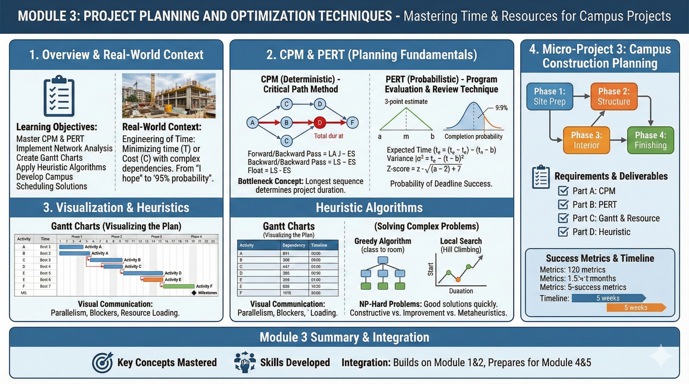
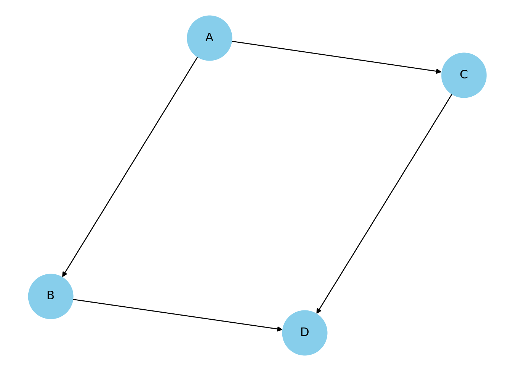

4Module 3: Project Planning and Optimization Techniques
4.1 Module Overview

4.1.1 Learning Objectives
Master project planning methodologies: CPM and PERT
Implement network analysis for project scheduling
Create and interpret Gantt charts for project visualization
Apply heuristic algorithms for optimization problems
Develop practical scheduling solutions for campus projects
4.1.2 Module Structure
Section 3.1: Introduction to Project Planning
Section 3.2: Critical Path Method (CPM)
Section 3.3: Program Evaluation and Review Technique (PERT)
Section 3.4: Gantt Charts and Project Visualization
Section 3.5: Heuristic Algorithms and Local Search
Section 3.6: Micro-Project 3: Campus Construction Planning
4.1.3 Real-World Context
In Module 1 and 2, we looked at how to optimize a system when we know the variables and the constraints. But in the real world—especially in engineering and software development—time is the most precious constraint of all.
Have you ever wondered how massive projects, like building our new campus library or launching a software product like ChatGPT, actually finish on time? It isn’t magic; it’s mathematics.
In this module, we are going to learn the art and science of Scheduling. We will move from “I hope we finish on time” to “I calculate we have a 95% probability of finishing by Friday.” Apply project planning techniques to campus construction projects, facility maintenance schedules, and resource allocation for campus events.
4.2 Introduction to Project Planning
4.2.1 The Engineering of Time
Project planning is essentially an optimization problem where we try to minimize time (\(T\)) or Cost (\(C\)) while respecting a complex web of dependencies.
Imagine you are cooking a meal. You cannot fry the onions before you chop them. That is a dependency. However, you can boil the water while you chop the onions. That is parallelism. Project planning is simply the mathematical modeling of these dependencies and parallel tasks.
4.2.2 Theoretical Foundation
We represent a project as a Directed Acyclic Graph (DAG), denoted as \(G = (V, E)\).
Vertices (\(V\)): These are events or milestones (e.g., “Foundation poured”).
Edges (\(E\)): These are the activities that take time (e.g., “Pouring Concrete - 3 days”).
Weights: The duration or cost attached to an edge.
4.2.2.1 Mathematical Representation
A project can be represented as a directed graph \(G = (V, E)\) where:
Vertices (V): Represent project milestones or activity completion points
Edges (E): Represent activities with associated durations
Weights: Activity durations or costs
Insight
Why “Acyclic”? Because if you have a cycle (A depends on B, B depends on A), you have an infinite loop. In project management, that means the project never finishes! We must avoid cycles.
4.2.3 Sample Scenario: The Library Construction
Let’s look at a concrete example. We are building a library. Here is the logic:
Activity
Description
Predecessors
Duration (weeks)
A
Site Prep
-
2
B
Foundation
A
4
C
Framing
B
6
D
Electrical
C
3
E
Plumbing
C
3
F
Interior
D, E
4
G
Exterior
C
2
H
Inspection
F, G
1
Do you see activity F? It cannot start until both D and E are finished. This is where the math gets interesting.
4.2.3.1 What is Project Planning?
Project planning involves defining project objectives, determining tasks and resources needed, and establishing timelines for project completion. In optimization context, it’s about finding the most efficient sequence of activities to minimize time or cost.
4.2.3.2 Key Components of Project Planning
Activities/Tasks: Discrete work elements with defined durations
Dependencies: Precedence relationships between activities
Resources: Personnel, equipment, and materials required
Time Estimates: Duration for each activity
Milestones: Significant checkpoints in project timeline
4.2.3.3 Project Management Objectives
Time Minimization: Complete project in shortest possible time
Cost Optimization: Minimize total project cost
Resource Leveling: Smooth resource utilization over time
Risk Mitigation: Identify and manage critical activities
4.2.3.4 Campus City Applications
Construction of new campus facilities
Maintenance scheduling for existing buildings
Event planning and resource allocation
Academic calendar optimization
Emergency response planning
4.2.4 Sample Problem
Problem Statement: Campus City is planning a new library construction with the following activities:
Activity
Description
Immediate Predecessors
Duration (weeks)
A
Site preparation
-
2
B
Foundation work
A
4
C
Structural framing
B
6
D
Electrical work
C
3
E
Plumbing work
C
3
F
Interior work
D, E
4
G
Exterior finishing
C
2
H
Final inspection
F, G
1
Construct the project network and identify the project completion time.
Solution Approach: We’ll represent this as a network diagram with nodes as activity completion points and edges as activities. The solution will be developed in Section 3.2.
4.2.5 Review Questions
What are the key differences between project planning and continuous optimization problems?
Explain how project dependencies create sequencing constraints that must be respected in scheduling.
Describe three campus scenarios where project planning techniques would provide significant benefits over ad-hoc scheduling.
What information is minimally required to begin project planning for a campus construction project?
How does uncertainty in activity durations affect project planning decisions?
4.3 Critical Path Method (CPM)
4.3.1 The “Bottleneck” Concept
The Critical Path Method (CPM) is one of the most powerful tools in an engineer’s toolkit. Here is the intuition: A project is only as fast as its slowest sequence of dependent tasks.
We call this longest sequence the Critical Path. If any activity on this path is delayed by one day, the entire project is delayed by one day.
4.3.1.1 What is Critical Path Method?
CPM is an algorithm for scheduling project activities that:
Identifies critical activities that cannot be delayed without delaying the project
Calculates the minimum project duration
Determines float/slack time for non-critical activities
4.3.1.2 CPM Terminology
Earliest Start Time (ES): Earliest time an activity can begin
Earliest Finish Time (EF): ES + Activity Duration
Latest Start Time (LS): Latest time an activity can begin without delaying project
Latest Finish Time (LF): LS + Activity Duration
Float/Slack: LF - EF or LS - ES (flexibility in scheduling)
Critical Path: Sequence of activities with zero float
4.3.1.3 CPM Algorithm Steps
Forward Pass (Calculate ES, EF):
Start with initial activity: ES = 0, EF = Duration
For each subsequent activity: ES = max(EF of all predecessors)
EF = ES + Duration
Project duration = max(EF of all terminal activities)
Backward Pass (Calculate LS, LF):
For terminal activities: LF = Project duration, LS = LF - Duration
For each preceding activity: LF = min(LS of all successors)
LS = LF - Duration
Identify Critical Path: Activities where ES = LS (or EF = LF) have zero float and are on critical path.
Where \(P(i)\) are predecessors and \(S(i)\) are successors.
4.4 Practice Problems: Critical Path Method (CPM)
4.4.1 The Systematic Approach: The “Pass” Method
To solve CPM problems without getting confused, we treat the project network like a circuit. We don’t guess; we calculate.
The 4-Step Algorithm:
Forward Pass (The Earliest Possible):
Start at Time 0.
Move \(Start \to End\).
Rule:\(ES = \max(EF \text{ of predecessors})\).
Logic: You can’t start until all your prerequisites are done.
Backward Pass (The Latest Permissible):
Start at the Project End Time.
Move \(End \to Start\).
Rule:\(LF = \min(LS \text{ of successors})\).
Logic: You must finish early enough so everyone waiting for you can start on time.
Calculate Float (The Buffer):
\(\text{Float} = LS - ES\) (or \(LF - EF\)).
Identify Critical Path:
Any activity with Zero Float is Critical.
4.4.2 Problem 1: The “Hello World” of CPM
Scenario: A simple linear workflow with one parallel branch.
Activity Data:
Activity
Predecessors
Duration (Days)
A
-
3
B
A
4
C
A
2
D
B, C
5
Mathematical Solution:
Step 1: Forward Pass (Find ES, EF)
A: Start at 0. Duration 3. \(\to EF = 3\).
B: Predecessor A (ends at 3). Start at 3. Duration 4. \(\to EF = 7\).
C: Predecessor A (ends at 3). Start at 3. Duration 2. \(\to EF = 5\).
D: Predecessors B (ends 7) and C (ends 5).
Rule: We must wait for the slowest one. \(\max(7, 5) = 7\).
Start at 7. Duration 5. \(\to EF = 12\).
Project Duration: 12 Days.
Step 2: Backward Pass (Find LF, LS)
D: End at 12. Duration 5. \(\to LS = 12 - 5 = 7\).
B: Successor D (starts at 7). Must finish by 7. Duration 4. \(\to LS = 7 - 4 = 3\).
C: Successor D (starts at 7). Must finish by 7. Duration 2. \(\to LS = 7 - 2 = 5\).
A: Successors B (starts 3) and C (starts 5).
Rule: Must be done in time for the earliest requirement. \(\min(3, 5) = 3\).
Must finish by 3. Duration 3. \(\to LS = 0\).
Step 3 & 4: Float & Critical Path
Activity
Duration
ES
EF
LS
LF
Float (LS-ES)
Critical?
A
3
0
3
0
3
0
Yes
B
4
3
7
3
7
0
Yes
C
2
3
5
5
7
2
No
D
5
7
12
7
12
0
Yes
Critical Path:\(A \to B \to D\)
Python solution
import networkx as nximport pandas as pd# 1. Define the Project Datatasks = {'A': {'duration': 3, 'predecessors': []},'B': {'duration': 4, 'predecessors': ['A']},'C': {'duration': 2, 'predecessors': ['A']},'D': {'duration': 5, 'predecessors': ['B', 'C']}}# 2. Build the Network GraphG = nx.DiGraph()for task, data in tasks.items(): G.add_node(task, duration=data['duration'])for pred in data['predecessors']: G.add_edge(pred, task)# ---------------------------------------------------------# 3. Forward Pass (Calculate Early Start & Early Finish)# ---------------------------------------------------------# We iterate in topological order to ensure predecessors are processed firstearly_start = {}early_finish = {}for task in nx.topological_sort(G):# ES is max of predecessor's EF. If no predecessors, ES = 0 predecessors =list(G.predecessors(task))ifnot predecessors: es =0else: es =max(early_finish[p] for p in predecessors) duration = G.nodes[task]['duration'] ef = es + duration early_start[task] = es early_finish[task] = efproject_duration =max(early_finish.values())# ---------------------------------------------------------# 4. Backward Pass (Calculate Late Start & Late Finish)# ---------------------------------------------------------# We iterate in reverse topological orderlate_start = {}late_finish = {}for task inreversed(list(nx.topological_sort(G))): successors =list(G.successors(task))# LF is min of successor's LS. If no successors, LF = Project Durationifnot successors: lf = project_durationelse: lf =min(late_start[s] for s in successors) duration = G.nodes[task]['duration'] ls = lf - duration late_finish[task] = lf late_start[task] = ls# ---------------------------------------------------------# 5. Calculate Slack & Identify Critical Path# ---------------------------------------------------------slack = {}critical_path = []for task in tasks: s = late_start[task] - early_start[task] slack[task] = sif s ==0: critical_path.append(task)# ---------------------------------------------------------# 6. Display Results# ---------------------------------------------------------# Create a DataFrame for a clean CPM Tabledf = pd.DataFrame({'Duration': [tasks[t]['duration'] for t in tasks],'ES (Early Start)': [early_start[t] for t in tasks],'EF (Early Finish)': [early_finish[t] for t in tasks],'LS (Late Start)': [late_start[t] for t in tasks],'LF (Late Finish)': [late_finish[t] for t in tasks],'Slack': [slack[t] for t in tasks],'Critical?': ['Yes'if s ==0else'No'for s in slack.values()]}, index=tasks.keys())print("--- CPM Schedule Table ---")print(df)print("-"*30)print(f"Total Project Duration: {project_duration} Days")print(f"Critical Path: {' -> '.join(critical_path)}")# Visualize the Networkimport matplotlib.pyplot as pltpos = nx.spring_layout(G)nx.draw(G, pos, with_labels=True, node_size=2000, node_color='skyblue')plt.show()
--- CPM Schedule Table ---
Duration ES (Early Start) EF (Early Finish) LS (Late Start) \
A 3 0 3 0
B 4 3 7 3
C 2 3 5 5
D 5 7 12 7
LF (Late Finish) Slack Critical?
A 3 0 Yes
B 7 0 Yes
C 7 2 No
D 12 0 Yes
------------------------------
Total Project Duration: 12 Days
Critical Path: A -> B -> D

4.4.3 Problem 2: The Bottleneck
Scenario: Software Development. Coding takes longer than Documentation.
Interpretation: The Documentation team (D) can delay their start by up to 5 days without affecting the launch date. The Coding team (C) has zero wiggle room.
Critical Path:\(S \to C \to T\)
Python solution
import networkx as nximport pandas as pd# 1. Define the Project Data (Updated for Problem 2)tasks = {'S': {'desc': 'Start Specs', 'duration': 2, 'predecessors': []},'C': {'desc': 'Code Module', 'duration': 8, 'predecessors': ['S']},'D': {'desc': 'Write Docs', 'duration': 3, 'predecessors': ['S']},'T': {'desc': 'Testing', 'duration': 4, 'predecessors': ['C', 'D']}}# 2. Build GraphG = nx.DiGraph()for task, data in tasks.items(): G.add_node(task, duration=data['duration'], desc=data['desc'])for pred in data['predecessors']: G.add_edge(pred, task)# 3. Forward Pass (Early Start/Finish)early_start = {}early_finish = {}for task in nx.topological_sort(G):# ES = Max of predecessor EF predecessors =list(G.predecessors(task)) es =max((early_finish[p] for p in predecessors), default=0) duration = G.nodes[task]['duration'] early_start[task] = es early_finish[task] = es + durationproject_duration =max(early_finish.values())# 4. Backward Pass (Late Start/Finish)late_start = {}late_finish = {}for task inreversed(list(nx.topological_sort(G))): successors =list(G.successors(task))# LF = Min of successor LS lf =min((late_start[s] for s in successors), default=project_duration) duration = G.nodes[task]['duration'] late_start[task] = lf - duration late_finish[task] = lf# 5. Calculate Slack & Critical Pathslack = {}critical_path = []for task in tasks: s = late_start[task] - early_start[task] slack[task] = sif s ==0: critical_path.append(task)# 6. Display Resultsdf = pd.DataFrame({'Description': [tasks[t]['desc'] for t in tasks],'Duration': [tasks[t]['duration'] for t in tasks],'ES': [early_start[t] for t in tasks],'EF': [early_finish[t] for t in tasks],'LS': [late_start[t] for t in tasks],'LF': [late_finish[t] for t in tasks],'Slack': [slack[t] for t in tasks],'Critical': ['Yes'if s ==0else'No'for s in slack.values()]}, index=tasks.keys())print("--- CPM Schedule Analysis: The Bottleneck ---")print(df[['Description', 'Duration', 'ES', 'EF', 'Slack', 'Critical']])print("-"*60)print(f"Total Project Duration: {project_duration} Days")print(f"Critical Path: {' -> '.join(critical_path)}")
--- CPM Schedule Analysis: The Bottleneck ---
Description Duration ES EF Slack Critical
S Start Specs 2 0 2 0 Yes
C Code Module 8 2 10 0 Yes
D Write Docs 3 2 5 5 No
T Testing 4 10 14 0 Yes
------------------------------------------------------------
Total Project Duration: 14 Days
Critical Path: S -> C -> T
4.4.4 Problem 3: The “Merge” Challenge
Scenario: Construction. Notice how Activity F depends on three things.
Activity Data:
Act
Pred
Time
A
-
5
B
A
3
C
A
4
D
A
6
E
B
2
F
C, D, E
3
Mathematical Solution:
Step 1: The Merge (Node F) * First, compute B, C, D (all start after A finishes at 5).
import networkx as nximport pandas as pd# 1. Define the Project Data (Problem 3: The Merge)tasks = {'A': {'duration': 5, 'predecessors': []},'B': {'duration': 3, 'predecessors': ['A']},'C': {'duration': 4, 'predecessors': ['A']},'D': {'duration': 6, 'predecessors': ['A']},'E': {'duration': 2, 'predecessors': ['B']},'F': {'duration': 3, 'predecessors': ['C', 'D', 'E']}}# 2. Build GraphG = nx.DiGraph()for task, data in tasks.items(): G.add_node(task, duration=data['duration'])for pred in data['predecessors']: G.add_edge(pred, task)# 3. Forward Pass (Early Start/Finish)early_start = {}early_finish = {}# Topological sort ensures we process parents before childrenfor task in nx.topological_sort(G): predecessors =list(G.predecessors(task))# ES is Max of predecessors' EF es =max((early_finish[p] for p in predecessors), default=0) duration = G.nodes[task]['duration'] early_start[task] = es early_finish[task] = es + durationproject_duration =max(early_finish.values())# 4. Backward Pass (Late Start/Finish)late_start = {}late_finish = {}for task inreversed(list(nx.topological_sort(G))): successors =list(G.successors(task))# LF is Min of successors' LS lf =min((late_start[s] for s in successors), default=project_duration) duration = G.nodes[task]['duration'] late_start[task] = lf - duration late_finish[task] = lf# 5. Calculate Slack & Critical Pathslack = {}critical_path = []for task in tasks: s = late_start[task] - early_start[task] slack[task] = sif s ==0: critical_path.append(task)# 6. Display Resultsdf = pd.DataFrame({'Duration': [tasks[t]['duration'] for t in tasks],'ES': [early_start[t] for t in tasks],'EF': [early_finish[t] for t in tasks],'LS': [late_start[t] for t in tasks],'LF': [late_finish[t] for t in tasks],'Slack': [slack[t] for t in tasks],'Critical': ['Yes'if s ==0else'No'for s in slack.values()]}, index=tasks.keys())print("--- CPM Schedule: The Merge Challenge ---")print(df)print("-"*60)print(f"Total Project Duration: {project_duration} Days")print(f"Critical Path: {' -> '.join(critical_path)}")
--- CPM Schedule: The Merge Challenge ---
Duration ES EF LS LF Slack Critical
A 5 0 5 0 5 0 Yes
B 3 5 8 6 9 1 No
C 4 5 9 7 11 2 No
D 6 5 11 5 11 0 Yes
E 2 8 10 9 11 1 No
F 3 11 14 11 14 0 Yes
------------------------------------------------------------
Total Project Duration: 14 Days
Critical Path: A -> D -> F
4.4.5 Problem 4: Complex Dependencies
Scenario: A tech product launch.
Act
Desc
Pred
Time
A
Market Research
-
10
B
Product Design
A
20
C
Ad Campaign
A
15
D
Prototype
B
10
E
Manufacture
D
30
F
Launch Event
C, E
5
Mathematical Solution:
Trace Table:
Node
Pred
ES
EF (=ES+Dur)
Succ
LF
LS (=LF-Dur)
Float
A
-
0
10
B, C
10
0
0
B
A
10
30
D
30
10
0
C
A
10
25
F
70
55
45
D
B
30
40
E
40
30
0
E
D
40
70
F
70
40
0
F
C, E
70
75
-
75
70
0
Calculations to Watch:
For F: Predecessors C(25) and E(70). \(\max(25, 70) = 70\).
For C: Successor F requires start at 70. Duration 15. \(LS = 70-15 = 55\).
Float for C: \(55 - 10 = 45\).
Insight: The Ad Campaign (C) is wildly non-critical. You have 45 days of slack!
Critical Path:\(A \to B \to D \to E \to F\)
Python solution
import networkx as nximport pandas as pd# 1. Define the Project Data (Problem 4: Tech Launch)tasks = {'A': {'desc': 'Market Research', 'duration': 10, 'predecessors': []},'B': {'desc': 'Product Design', 'duration': 20, 'predecessors': ['A']},'C': {'desc': 'Ad Campaign', 'duration': 15, 'predecessors': ['A']},'D': {'desc': 'Prototype', 'duration': 10, 'predecessors': ['B']},'E': {'desc': 'Manufacture', 'duration': 30, 'predecessors': ['D']},'F': {'desc': 'Launch Event', 'duration': 5, 'predecessors': ['C', 'E']}}# 2. Build GraphG = nx.DiGraph()for task, data in tasks.items(): G.add_node(task, duration=data['duration'], desc=data['desc'])for pred in data['predecessors']: G.add_edge(pred, task)# 3. Forward Pass (Early Start/Finish)early_start = {}early_finish = {}for task in nx.topological_sort(G): predecessors =list(G.predecessors(task)) es =max((early_finish[p] for p in predecessors), default=0) duration = G.nodes[task]['duration'] early_start[task] = es early_finish[task] = es + durationproject_duration =max(early_finish.values())# 4. Backward Pass (Late Start/Finish)late_start = {}late_finish = {}for task inreversed(list(nx.topological_sort(G))): successors =list(G.successors(task)) lf =min((late_start[s] for s in successors), default=project_duration) duration = G.nodes[task]['duration'] late_start[task] = lf - duration late_finish[task] = lf# 5. Calculate Slack & Critical Pathslack = {}critical_path = []for task in tasks: s = late_start[task] - early_start[task] slack[task] = sif s ==0: critical_path.append(task)# 6. Display Resultsdf = pd.DataFrame({'Description': [tasks[t]['desc'] for t in tasks],'Duration': [tasks[t]['duration'] for t in tasks],'ES': [early_start[t] for t in tasks],'EF': [early_finish[t] for t in tasks],'LS': [late_start[t] for t in tasks],'LF': [late_finish[t] for t in tasks],'Slack': [slack[t] for t in tasks],'Critical': ['Yes'if s ==0else'No'for s in slack.values()]}, index=tasks.keys())print("--- CPM Analysis: Tech Product Launch ---")print(df[['Description', 'Duration', 'ES', 'EF', 'Slack', 'Critical']])print("-"*65)print(f"Total Project Duration: {project_duration} Days")print(f"Critical Path: {' -> '.join(critical_path)}")
--- CPM Analysis: Tech Product Launch ---
Description Duration ES EF Slack Critical
A Market Research 10 0 10 0 Yes
B Product Design 20 10 30 0 Yes
C Ad Campaign 15 10 25 45 No
D Prototype 10 30 40 0 Yes
E Manufacture 30 40 70 0 Yes
F Launch Event 5 70 75 0 Yes
-----------------------------------------------------------------
Total Project Duration: 75 Days
Critical Path: A -> B -> D -> E -> F
4.4.6 Problem 5: The “Exam Style” Tabular Problem
Scenario: Complete the table to find the project parameters.
Both paths are bottlenecks. Delays in either A OR B will delay the project.
Python solution
import networkx as nximport pandas as pd# 1. Define the Project Data (Problem 5)tasks = {'A': {'duration': 4, 'predecessors': []},'B': {'duration': 3, 'predecessors': []},'C': {'duration': 2, 'predecessors': ['A']},'D': {'duration': 5, 'predecessors': ['A']},'E': {'duration': 6, 'predecessors': ['B']},'F': {'duration': 3, 'predecessors': ['C', 'D', 'E']}}# 2. Build GraphG = nx.DiGraph()for task, data in tasks.items(): G.add_node(task, duration=data['duration'])for pred in data['predecessors']: G.add_edge(pred, task)# 3. Forward Pass (Early Start/Finish)early_start = {}early_finish = {}for task in nx.topological_sort(G): predecessors =list(G.predecessors(task))# If no preds, start at 0. Else max of preds' finish. es =max((early_finish[p] for p in predecessors), default=0) duration = G.nodes[task]['duration'] early_start[task] = es early_finish[task] = es + durationproject_duration =max(early_finish.values())# 4. Backward Pass (Late Start/Finish)late_start = {}late_finish = {}for task inreversed(list(nx.topological_sort(G))): successors =list(G.successors(task))# If no successors, finish at Project Duration. Else min of succs' start. lf =min((late_start[s] for s in successors), default=project_duration) duration = G.nodes[task]['duration'] late_start[task] = lf - duration late_finish[task] = lf# 5. Calculate Slack & Identify Critical Pathsslack = {}critical_path_tasks = []for task in tasks: s = late_start[task] - early_start[task] slack[task] = sif s ==0: critical_path_tasks.append(task)# 6. Display Resultsdf = pd.DataFrame({'Duration': [tasks[t]['duration'] for t in tasks],'ES': [early_start[t] for t in tasks],'EF': [early_finish[t] for t in tasks],'LS': [late_start[t] for t in tasks],'LF': [late_finish[t] for t in tasks],'Slack': [slack[t] for t in tasks],'Critical': ['Yes'if s ==0else'No'for s in slack.values()]}, index=tasks.keys())print("--- CPM Tabular Solution ---")print(df)print("-"*60)print(f"Total Project Duration: {project_duration} Days")print(f"Critical Tasks: {', '.join(critical_path_tasks)}")
--- CPM Tabular Solution ---
Duration ES EF LS LF Slack Critical
A 4 0 4 0 4 0 Yes
B 3 0 3 0 3 0 Yes
C 2 4 6 7 9 3 No
D 5 4 9 4 9 0 Yes
E 6 3 9 3 9 0 Yes
F 3 9 12 9 12 0 Yes
------------------------------------------------------------
Total Project Duration: 12 Days
Critical Tasks: A, B, D, E, F
4.4.7 Sample Problem
Problem Statement: Solve the library construction problem from Section 3.1 using CPM.
Solution:
Forward Pass:
A: ES=0, EF=2
B: ES=2, EF=6
C: ES=6, EF=12
D: ES=12, EF=15
E: ES=12, EF=15
F: ES=15, EF=19
G: ES=12, EF=14
H: ES=19, EF=20
Backward Pass:
H: LF=20, LS=19
F: LF=19, LS=15
G: LF=19, LS=17
D: LF=15, LS=12
E: LF=15, LS=12
C: LF=12, LS=6
B: LF=6, LS=2
A: LF=2, LS=0
Critical Path: A → B → C → D → F → H (Float = 0 for all) Project Duration: 20 weeks
Non-critical Activity: G has float of 3 weeks (LS=17, ES=14)
4.4.8 Sample Problem
Problem Statement: A campus renovation project has the following activities with crashing costs (cost to reduce duration by 1 week):
Activity
Normal Time
Crash Time
Normal Cost
Crash Cost
Predecessors
A
3
2
$1000
$1500
-
B
4
3
$2000
$2600
A
C
5
4
$1500
$2000
A
D
6
4
$3000
$4200
B, C
Find the minimum cost schedule to complete in 10 weeks.
Solution Approach: Use CPM with time-cost trade-off analysis (crashing). Calculate cost slope = (Crash Cost - Normal Cost)/(Normal Time - Crash Time) and crash activities on critical path starting with lowest cost slope.
Python solution
import networkx as nximport pandas as pdfrom itertools import combinations# ---------------------------------------------------------# 1. Setup Project Data# ---------------------------------------------------------# Format: {Activity: {NormalT, CrashT, NormalC, CrashC, Predecessors}}data = {'A': {'nT': 3, 'cT': 2, 'nC': 1000, 'cC': 1500, 'pred': []},'B': {'nT': 4, 'cT': 3, 'nC': 2000, 'cC': 2600, 'pred': ['A']},'C': {'nT': 5, 'cT': 4, 'nC': 1500, 'cC': 2000, 'pred': ['A']},'D': {'nT': 6, 'cT': 4, 'nC': 3000, 'cC': 4200, 'pred': ['B', 'C']}}TARGET_DURATION =10# ---------------------------------------------------------# 2. Helper Functions# ---------------------------------------------------------def calculate_slope(task):"""Calculates Cost Slope = (Crash Cost - Normal Cost) / (Normal Time - Crash Time)""" props = data[task]if props['nT'] == props['cT']: returnfloat('inf') # Cannot crashreturn (props['cC'] - props['nC']) / (props['nT'] - props['cT'])def get_project_duration(current_times):"""Runs CPM Forward Pass to find Project Duration""" G = nx.DiGraph()for task, props in data.items(): G.add_node(task, duration=current_times[task])for p in props['pred']: G.add_edge(p, task)# Calculate Earliest Finish (EF) early_finish = {}for task in nx.topological_sort(G): preds =list(G.predecessors(task)) es =max((early_finish[p] for p in preds), default=0) early_finish[task] = es + current_times[task]returnmax(early_finish.values())# ---------------------------------------------------------# 3. Initialization# ---------------------------------------------------------# Current state of durations (Starts at Normal Time)current_times = {t: data[t]['nT'] for t in data}current_cost =sum(data[t]['nC'] for t in data)history = []# Calculate Slopesslopes = {t: calculate_slope(t) for t in data}# ---------------------------------------------------------# 4. Iterative Crashing Loop# ---------------------------------------------------------print("--- Crashing Analysis Log ---")whileTrue: duration = get_project_duration(current_times) history.append({'Duration': duration, 'Total Cost': current_cost, 'Action': 'Status Check'})if duration <= TARGET_DURATION:print(f"Target of {TARGET_DURATION} weeks reached!")break# Find the Best Move (Cheapest way to reduce duration by 1 unit) best_move =None min_move_cost =float('inf')# Strategy A: Try crashing single tasks candidates = [t for t in data if current_times[t] > data[t]['cT']]for task in candidates:# Simulate Crash current_times[task] -=1 new_dur = get_project_duration(current_times) current_times[task] +=1# Revert# If duration decreased, this is a valid moveif new_dur < duration: cost = slopes[task]if cost < min_move_cost: min_move_cost = cost best_move = [task]# Strategy B: If single tasks fail (due to parallel critical paths), try pairsif best_move isNone:# We need to crash two parallel tasks simultaneously (e.g., B and C)for t1, t2 in combinations(candidates, 2): current_times[t1] -=1 current_times[t2] -=1 new_dur = get_project_duration(current_times) current_times[t1] +=1 current_times[t2] +=1if new_dur < duration: cost = slopes[t1] + slopes[t2]if cost < min_move_cost: min_move_cost = cost best_move = [t1, t2]# Apply the Best Moveif best_move: actions_str =""for task in best_move: current_times[task] -=1 current_cost += slopes[task] actions_str +=f"Crash {task} (-1 wk, +${slopes[task]}); "print(f"Current Duration: {duration} wks. Action: {actions_str}")else:print("Cannot crash further (Max limit reached).")break# ---------------------------------------------------------# 5. Final Output# ---------------------------------------------------------df_res = pd.DataFrame(history)print("\n--- Final Project Schedule ---")print(f"Final Duration: {get_project_duration(current_times)} weeks")print(f"Final Total Cost: ${current_cost}")print(f"Durations: {current_times}")print("-"*40)print(df_res)
--- Crashing Analysis Log ---
Current Duration: 14 wks. Action: Crash A (-1 wk, +$500.0);
Current Duration: 13 wks. Action: Crash C (-1 wk, +$500.0);
Current Duration: 12 wks. Action: Crash D (-1 wk, +$600.0);
Current Duration: 11 wks. Action: Crash D (-1 wk, +$600.0);
Target of 10 weeks reached!
--- Final Project Schedule ---
Final Duration: 10 weeks
Final Total Cost: $9700.0
Durations: {'A': 2, 'B': 4, 'C': 4, 'D': 4}
----------------------------------------
Duration Total Cost Action
0 14 7500.0 Status Check
1 13 8000.0 Status Check
2 12 8500.0 Status Check
3 11 9100.0 Status Check
4 10 9700.0 Status Check
4.4.9 Review Questions
Explain why activities on the critical path have zero float. What implications does this have for project management?
How does CPM help in resource allocation for campus construction projects?
Given a project network, how would you determine all possible critical paths if multiple exist?
What is the significance of float/slack time in project scheduling? How can it be utilized effectively?
Design a CPM analysis for planning a campus festival. Identify what would constitute critical activities.
4.5 Program Evaluation and Review Technique (PERT)
4.5.1 Theoretical Foundation
4.5.1.1 What is PERT?
CPM assumes we know exactly how long tasks take. But in reality, construction crews get sick, materials arrive late, and code has bugs. PERT extends CPM by incorporating probabilistic time estimates to handle uncertainty in activity durations.
4.5.1.2 Three-Point Time Estimates
Each activity has three duration estimates:
Optimistic Time (a): Minimum possible time under ideal conditions
Most Likely Time (m): Most probable time under normal conditions
Pessimistic Time (b): Maximum possible time under worst conditions
Standard Deviation (σ):\[
\sigma = \frac{b - a}{6}
\]
Why divide by 6?
This approximation assumes the range from \(a\) to \(b\) covers 6 standard deviations (\(\pm 3\sigma\)) of a normal distribution, which covers 99.7% of all outcomes. It is a brilliant statistical shortcut!
4.5.2 Probability of Deadline Success
Once we have the expected duration and variance for the Critical Path, we can use the Central Limit Theorem. It tells us the total project time will follow a Normal Distribution (Bell Curve).
4.5.2.1 Probability Analysis
For the entire project:
Expected Project Duration: Sum of te along critical path
Project Variance: Sum of variances along critical path
Project Standard Deviation: Square root of project variance
We can calculate the Z-score:
Using normal distribution (Central Limit Theorem): \[
Z = \frac{T - T_E}{\sigma_p}
\]
Where:
\(T\): Target completion time
\(T_E\): Expected project duration
\(\sigma_p\): Project standard deviation
\(Z\): Standard normal variable Or \[Z = \frac{\text{Target Time} - \text{Expected Time}}{\text{Project Standard Deviation}}\]
This \(Z\) value tells us the precise probability of meeting a deadline. For example, if \(Z=1.65\), there is a 95% chance you finish on time. This is how professional engineers manage risk. Probability of Completion:
4.5.2.2 PERT vs CPM Comparison
Aspect
CPM
PERT
Time Estimates
Deterministic
Probabilistic
Focus
Time-Cost trade-offs
Time uncertainty
Best For
Well-defined projects
Research/development
Output
Critical path, floats
Completion probabilities
4.5.3 Sample Problem
Problem Statement: For the library construction project, add probabilistic time estimates:
Activity
a
m
b
Predecessors
A
1
2
3
-
B
3
4
5
A
C
5
6
7
B
D
2
3
4
C
E
2
3
4
C
F
3
4
5
D, E
G
1
2
3
C
H
1
1
1
F, G
Calculate:
Expected project duration
Probability of completing in 22 weeks
95% confidence interval for completion
Solution:
Step 1: Calculate te for each activity:
A: (1+8+3)/6 = 2
B: (3+16+5)/6 = 4
C: (5+24+7)/6 = 6
D: (2+12+4)/6 = 3
E: (2+12+4)/6 = 3
F: (3+16+5)/6 = 4
G: (1+8+3)/6 = 2
H: (1+4+1)/6 = 1
Step 2: Identify critical path (same as CPM): A-B-C-D-F-H
Expected duration: 2+4+6+3+4+1 = 20 weeks
Step 3: Calculate variances along critical path:
A: ((3-1)/6)² = 0.11
B: ((5-3)/6)² = 0.11
C: ((7-5)/6)² = 0.11
D: ((4-2)/6)² = 0.11
F: ((5-3)/6)² = 0.11
H: ((1-1)/6)² = 0
Total variance: 0.55
Standard deviation: √0.55 = 0.74 weeks
Step 4: Probability of completing in 22 weeks:
Z = (22-20)/0.74 = 2.70, P(Z ≤ 2.70) ≈ 0.9965 → 99.65% probability
Step 5: 95% confidence interval:
Z for 95% = 1.96, Interval: 20 ± 1.96×0.74 = [18.55, 21.45] weeks
4.5.4 Sample Problem
Problem Statement: A campus research project has activity D with estimates: a=4, m=5, b=12 weeks. Calculate the expected time and standard deviation. What does the large range (b-a) indicate?
Interpretation: Large uncertainty in this activity duration. Should be monitored closely.
4.5.5 Review Questions
Explain why PERT uses the formula (a+4m+b)/6 for expected time rather than a simple average.
How does the assumption of normal distribution for project completion time rely on the Central Limit Theorem?
Calculate the probability of completing a project with expected duration 45 days and standard deviation 5 days within 50 days.
What managerial insights can be gained from PERT probability analysis that are not available from deterministic CPM?
Design a PERT analysis for planning a campus conference. Which activities would likely have the highest uncertainty and why?
4.6 Gantt Charts and Project Visualization
While CPM and PERT are the brains of the operation, the Gantt Chart is the face. It is a horizontal bar chart that maps activities against time. ### Why do we need this? Imagine explaining “Nodes and Edges” to a University Dean or a Construction Foreman. They might not understand graph theory, but they understand a bar chart.
It visualizes Parallelism: “Look, the electricians and plumbers are working at the same time.”
It highlights blockers: “We cannot paint until the drywall is up.”
4.6.1 Theoretical Foundation
4.6.1.1 What is a Gantt Chart?
A Gantt chart is a bar chart that visually represents a project schedule, showing:
Slack/Float Representation: Show available flexibility
4.6.1.5 Benefits for Campus Projects
Visual Communication: Easy to understand for stakeholders
Progress Tracking: Monitor actual vs planned
Resource Management: Identify overallocation
Schedule Adjustment: Visualize impact of changes
Stakeholder Reporting: Professional project updates
4.6.2 Sample Problem
Problem Statement: Create a Gantt chart for the library construction project using CPM results from Section 3.2.
Solution Structure:
Timeline (weeks): 0 2 4 6 8 10 12 14 16 18 20
Activity Bars:
A: [======] Weeks 0-2 (Critical)
B: [==============] Weeks 2-6 (Critical)
C: [======================] Weeks 6-12 (Critical)
D: [===========] Weeks 12-15 (Critical)
E: [===========] Weeks 12-15
F: [===============] Weeks 15-19 (Critical)
G: [=======] Weeks 12-14 (Float: Weeks 14-17)
H: [====] Weeks 19-20 (Critical)
Dependencies: Arrows connecting bars according to precedence
Milestones:
Start: Week 0
Foundation Complete: Week 6
Structure Complete: Week 12
Project Complete: Week 20
4.6.3 Sample Problem
Problem Statement: A campus event planning project has resource constraints (only 2 project managers available). Create a resource-leveled Gantt chart.
Activities with PM requirements:
Planning: 2 PMs, 2 weeks
Vendor Selection: 1 PM, 3 weeks
Logistics: 2 PMs, 2 weeks
Promotion: 1 PM, 4 weeks
Execution: 2 PMs, 1 week
Solution Approach: Adjust schedule within float limits to ensure never more than 2 PMs working simultaneously, minimizing project extension.
4.6.4 Review Questions
What information from CPM analysis is essential for creating an accurate Gantt chart?
How do Gantt charts help in communicating project status to non-technical campus stakeholders?
Design a Gantt chart for a semester-long academic project. What special considerations would apply?
Explain how resource leveling can be visualized and implemented using Gantt charts.
What are the limitations of Gantt charts compared to network diagrams for complex projects?
4.7 Heuristic Algorithms and Local Search
Sometimes, a project is so complex—like scheduling 5,000 exams for 20,000 students in 500 rooms—that finding the perfect mathematical solution would take a supercomputer 100 years. These are called NP-Hard problems. In these cases, we use Heuristics. A heuristic is a fancy word for a “smart rule of thumb.” It doesn’t guarantee the perfect solution, but it guarantees a good solution quickly.
4.7.1 Theoretical Foundation
4.7.1.1 What are Heuristic Algorithms?
Heuristics are problem-solving approaches that:
Find good (not necessarily optimal) solutions efficiently
Handle complex, large-scale, or NP-hard problems
Use rules of thumb, intuition, or iterative improvement
Large-scale problems: Solution space too large for exhaustive search
Real-time decisions: Need quick, good-enough solutions
Complex constraints: Difficult to model mathematically
4.7.1.3 Types of Heuristics
Constructive Heuristics:
Build solution from scratch
Example: Nearest Neighbor for TSP
Improvement Heuristics:
Start with initial solution and improve it
Example: Local Search, Simulated Annealing
Metaheuristics:
High-level strategies to guide search
Examples: Genetic Algorithms, Tabu Search
4.7.2 Greedy Algorithms
A greedy algorithm makes the best choice right now, without worrying about the future. Example: Assign the largest class to the first available large room. Then the next. Then the next.
4.7.2.1 Local Search Algorithms
Imagine you are blindfolded on a mountain and want to reach the peak. You step in a random direction. If you go up, you stay there. If you go down, you step back. You keep doing this until you can’t go up anymore.
Basic Local Search:
Start with initial solution
Evaluate neighborhood (solutions reachable by small change)
Move to best neighbor
Repeat until no improving neighbor exists
Variants:
Hill Climbing: Always move to better solution
Steepest Ascent: Evaluate all neighbors, choose best
Random Restart: Multiple runs from different starting points
4.7.2.2 Applications in Campus Planning
Room Assignment: Assign classes to rooms heuristically
Problem Statement: Schedule 5 campus events into 3 time slots (Morning, Afternoon, Evening) with preferences:
Events A, B conflict (can’t be same slot)
Event C prefers Morning
Event D prefers Afternoon or Evening
Event E has no preference Use greedy heuristic to create schedule.
Heuristic Solution:
Place C in Morning (highest priority preference)
Place A in Afternoon (avoids conflict with C)
Place B in Evening (avoids conflict with A)
Place D in Afternoon (preference satisfied)
Place E in remaining slot (Evening)
Result:
Morning: C
Afternoon: A, D
Evening: B, E
4.7.4 Sample Problem
Problem Statement: Optimize delivery routes for campus catering using 2-opt local search heuristic for TSP.
Initial Route: Warehouse → A → B → C → D → E → Warehouse (Distance: 45 km)
2-opt Operation: Try swapping pairs of edges to reduce total distance.
Example Improvement:
Swap B-C and D-E connections: New route: Warehouse → A → B → D → C → E → Warehouse If distance < 45 km, accept the swap.
4.7.5 Review Questions
Explain the trade-off between solution quality and computational time when using heuristic algorithms.
What is the “local optimum” problem in local search algorithms and how can it be addressed?
Design a greedy heuristic for assigning project teams to campus facilities based on proximity and capacity.
Compare constructive heuristics vs improvement heuristics. When would you use each approach?
How can heuristics be combined with exact methods (like CPM) for complex campus planning problems?
4.8 Micro-Project 3: Campus Construction Planning
4.8.1 Project Overview
4.8.1.1 Business Context
Campus City is planning a major expansion: construction of a new Student Center. As the project planning specialist, you are responsible for developing the complete project plan using CPM, PERT, and heuristic optimization techniques.
4.8.1.2 Project Scope
The new Student Center construction involves:
Site preparation and utilities
Main structure construction
Interior finishing and amenities
External landscaping
Final commissioning and handover
4.8.2 Project Data Specification
4.8.2.1 Activities and Dependencies
Based on campus construction standards and previous projects:
Phase 1: Site Preparation (Weeks 1-8)
A: Clear site (3 weeks)
B: Excavate foundation (2 weeks, after A)
C: Install utilities (4 weeks, after A)
D: Pour foundation (3 weeks, after B, C)
Phase 2: Structure Construction (Weeks 9-20)
E: Erect steel frame (6 weeks, after D)
F: Install roofing (3 weeks, after E)
G: External walls (4 weeks, after E)
H: Windows/doors (2 weeks, after F, G)
Phase 3: Interior Work (Weeks 21-32)
I: Electrical systems (5 weeks, after H)
J: Plumbing systems (4 weeks, after H)
K: HVAC installation (4 weeks, after H)
L: Drywall/painting (3 weeks, after I, J, K)
Phase 4: Finishing (Weeks 33-40)
M: Flooring (3 weeks, after L)
N: Fixtures/furniture (2 weeks, after M)
O: Landscaping (4 weeks, after G)
P: Final inspection (1 week, after N, O)
4.8.2.2 Probabilistic Time Estimates
For critical activities, provide three-point estimates:
E: Steel erection: 5, 6, 8 weeks
I: Electrical: 4, 5, 7 weeks
M: Flooring: 2, 3, 5 weeks
4.8.2.3 Resource Constraints
Maximum 3 construction crews available
Specialized equipment available for 2 activities simultaneously
Budget constraint: $5,000,000 total
Crew costs: $10,000/week per crew
4.8.3 Project Requirements
4.8.3.1 Part A: CPM Analysis (4 Marks)
Tasks:
Network Diagram: Create complete project network
Critical Path Identification: Determine all critical activities
Float Calculation: Compute float for non-critical activities
Minimum Duration: Calculate project completion time
Deliverables:
Complete CPM calculations table
Network diagram visualization
Critical path analysis report
4.8.3.2 Part B: PERT Analysis (4 Marks)
Tasks:
Expected Times: Calculate te for all activities
Probability Analysis: Determine probability of completion in 42 weeks
Confidence Intervals: Compute 90% and 95% confidence intervals
Risk Assessment: Identify high-risk activities
Deliverables:
PERT calculations with variances
Probability analysis report
Risk mitigation recommendations
4.8.3.3 Part C: Gantt Chart & Resource Planning (4 Marks)
Week 1: Data analysis and network construction Week 2: CPM calculations and critical path analysis Week 3: PERT analysis and probability computations Week 4: Gantt chart creation and resource planning Week 5: Heuristic optimization and final report
4.8.6 Success Metrics
4.8.6.1 Technical Validation
Network Consistency: All dependencies correctly modeled